Product Designer · Web, mobile & SaaSHi there! I’m Raf.
I make complex digital products feel simple.
For 16 years I’ve designed apps and digital products for web and mobile. I work across research, journeys, UI, and design systems to make complicated workflows clearer for the people using them.
16 years in UX/UI Design7 years designing B2B SaaS20+ indie apps shipped
Selected projects
A few products I’ve helped shape.
A selection of SaaS, mobile, and AI products, from early research and guided flows to navigation and design systems.

B2B SaaS · Lead Product Designer · 5 years
Witco
I helped grow a workplace and building-management platform from MVP into a system with more than 50 configurable modules. The work spanned new workflows, regular testing, a white-label design system, and close collaboration with founders and developers.
Explore the case study ↗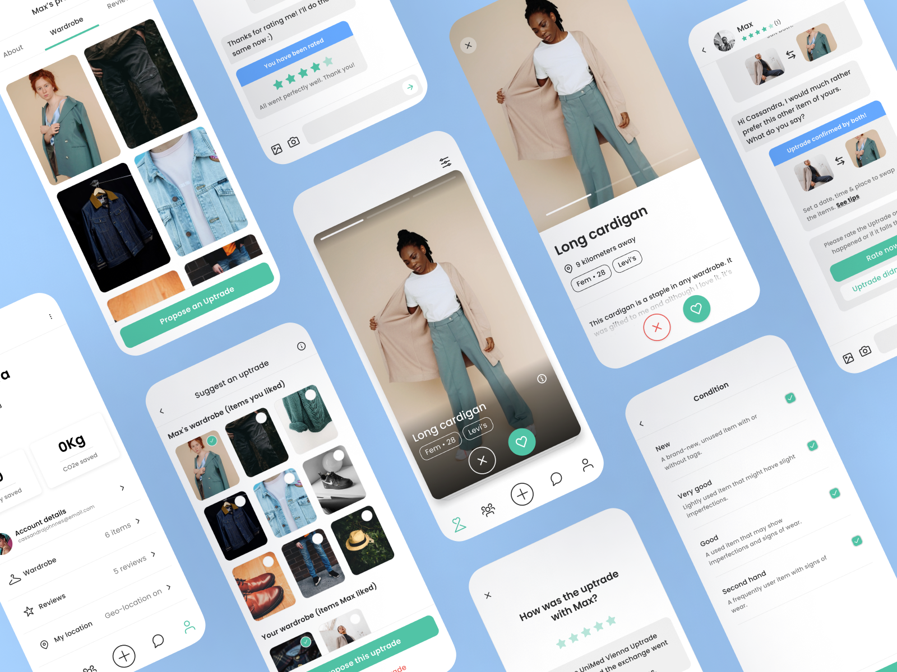
Research · Onboarding · Mobile
Uptraded
User interviews and a UX audit informed a redesign of onboarding, discovery, matching, profiles, trading, and chat.
Explore the case study ↗
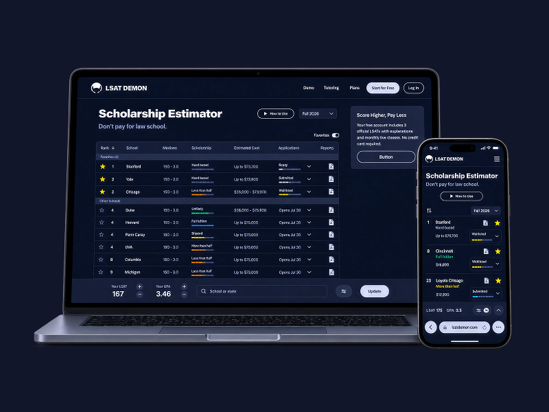
Guided flows · AI-assisted planning
LSAT Demon
Within an established product system, I explored and prototyped a study planner shaped around learner availability, generated plans, and manual adjustments.
Explore the case study ↗
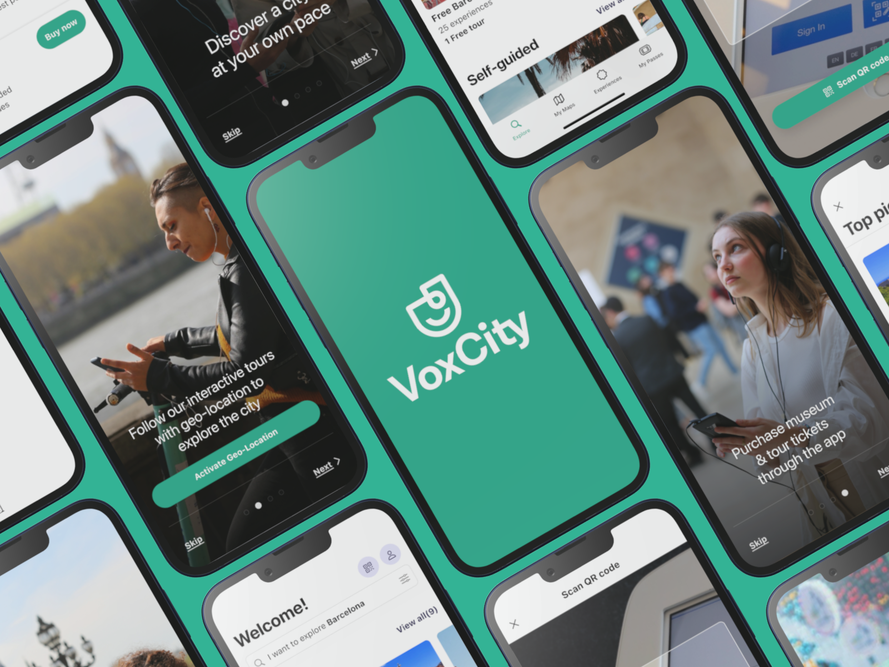
UX audit · Navigation · Mobile
Vox City
I reviewed the existing app, rethought its information architecture and key journeys, then carried the new experience through a full UX/UI redesign.
Explore the case study ↗
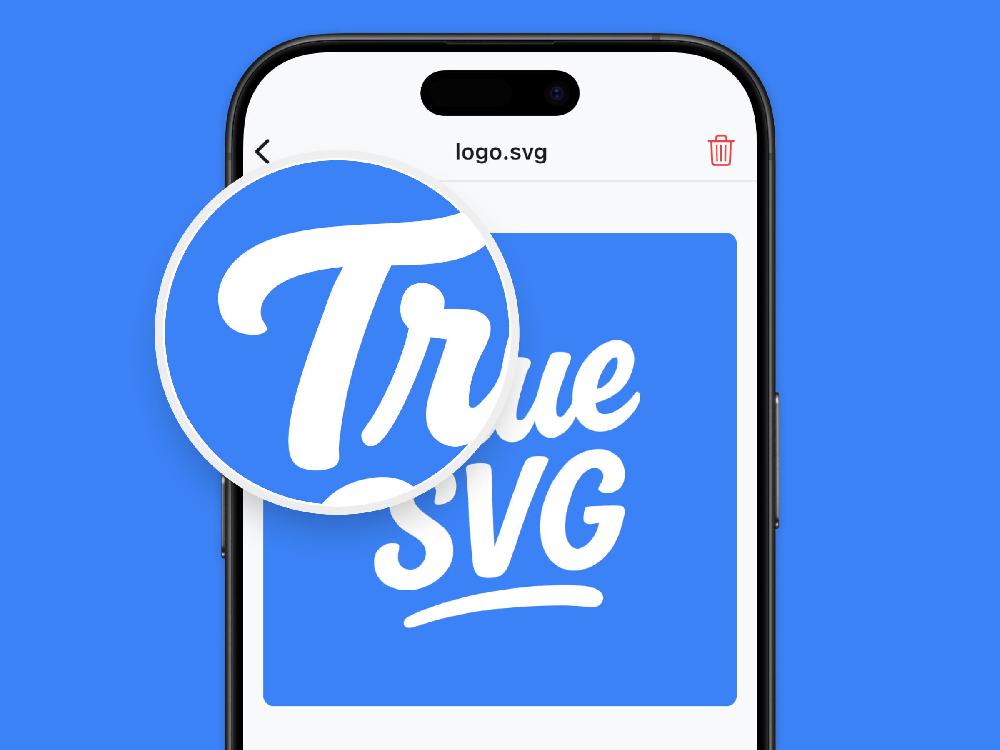
Own product · AI interaction · iOS
TrueSVG
An AI-powered image-to-vector app I helped create, with a focused flow from importing a raster image to exporting an editable SVG.
See all projects →
My approach
Look at the whole journey.
Good product design connects what users need, what the business needs, and what a team can actually build.
01Understand before designing
Talk with stakeholders and users, understand the context, and find where people get stuck. The method fits the question rather than following a fixed process.
02Make the next step clear
Map journeys and prototype interactions where navigation, onboarding, or AI suggestions need to be tested in context.
03Design for a growing product
Build reusable patterns in Figma and work closely with developers so the experience stays coherent beyond the first release.
Independent products
I also ship my own apps.
Building products myself keeps me close to real constraints, user feedback, and the details that only show up after launch.
Audio · Mobile
MicUp
Turn a phone into a microphone for a connected speaker, with voice effects and recording.
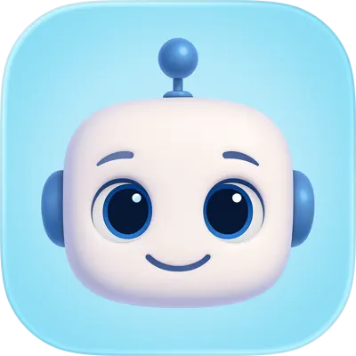
AI · Mobile
ZeroAI
Rewrite and refine AI-generated text across different tones and languages.
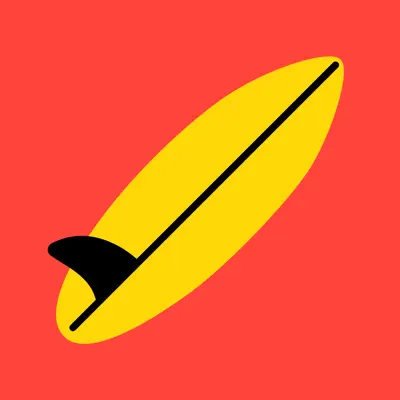
Surf data · iPhone & Apple Watch
Buoywatch
See live buoy readings, swell trends, alerts, and surf conditions at a glance.
AI · Design
TrueSVG
Convert raster images into clean, scalable SVG files.
AI · Identification
CoinPic
Identify coins and banknotes from photos.
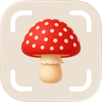
AI · Identification
ShroomPic
Identify mushrooms and fungi from photos.
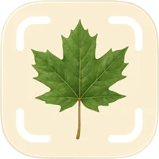
AI · Identification
TreePic
Identify trees, plants, and flowers from photos.
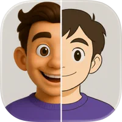
AI · Creative
CartoonPic
Transform photos into cartoon-style artwork.
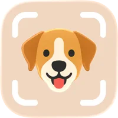
AI · Identification
DogPic
Identify dog breeds from photos.
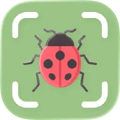
AI · Identification
BugPic
Identify insects from photos.
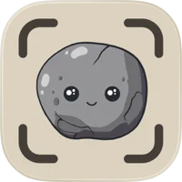
AI · Identification
RockPic
Identify rocks and gemstones from photos.
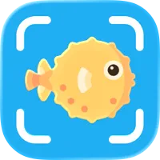
AI · Identification
FishPic
Identify fish from photos.
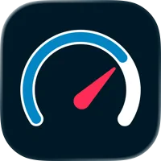
Weather · Tracking
Barometric Pressure Offline
Track pressure, altitude, and changes over time.
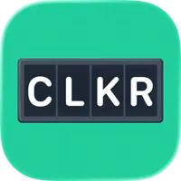
Utility · Counting
Clicker
A quick tap counter for everyday tallies.
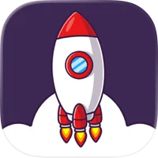
Productivity · Time tracking
ShipMode
Keep track of working hours and tasks.
Social · Conversation
Mingler
Conversation starters for getting to know people.
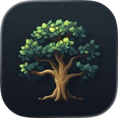
Finance · Tracking
Arbolito
Follow crypto prices and market data.
Social · Couples
LoveCardz
Questions and games for couples.
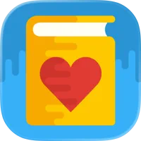
Books · Community
Swappy Books
Discover and exchange books with other readers.
Creative · Drawing
Tracing Board
A digital lightbox for tracing and drawing.
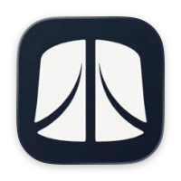
Mac · App metadata
Dragoman
Translate App Store metadata in bulk.
Browse more of our apps on the App Store ↗
I’m a Senior Product Designer working across SaaS, mobile, and web. I have 7 years of experience designing complex SaaS products, particularly B2B platforms, while also designing and shipping my own apps.
I’m comfortable moving from research and structure to detailed UI and developer handoff. I care about improving what is already working as much as I care about finding what needs to change.
User researchInformation architectureOnboardingFigmaDesign systemsPrototypingAI interactionsDeveloper collaboration